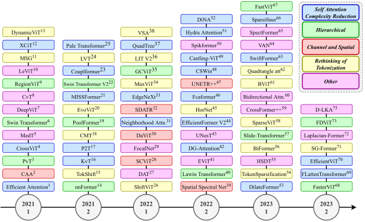

✨ arXiv preprint, 2024 ✨
Intrigued by the inherent ability of the human visual system to identify salient regions in complex scenes, attention mechanisms have been seamlessly integrated into various Computer Vision (CV) tasks. Building upon this paradigm, Vision Transformer (ViT) networks exploit attention mechanisms for improved efficiency. This review navigates the landscape of redesigned attention mechanisms within ViTs, aiming to enhance their performance. This paper provides a comprehensive exploration of techniques and insights for designing attention mechanisms, systematically reviewing recent literature in the field of CV. This survey begins with an introduction to the theoretical foundations and fundamental concepts underlying attention mechanisms. We then present a systematic taxonomy of various attention mechanisms within ViTs, employing redesigned approaches. A multi-perspective categorization is proposed based on their application, objectives, and the type of attention applied. The analysis includes an exploration of the novelty, strengths, weaknesses, and an in-depth evaluation of the different proposed strategies. This culminates in the development of taxonomies that highlight key properties and contributions. Finally, we gather the reviewed studies along with their available open-source implementations at our GitHub. We aim to regularly update it with the most recent relevant papers.

@article{heidari2024enhancing,
title = {Enhancing Efficiency in Vision Transformer Networks: Design Techniques and Insights},
author = {Heidari, Moein and Azad, Reza and Kolahi, Sina Ghorbani and Arimond, René and Niggemeier, Leon and Sulaiman, Alaa and Bozorgpour, Afshin and Aghdam, Ehsan Khodapanah and Kazerouni, Amirhossein and Hacihaliloglu, Ilker and Merhof, Dorit},
journal = {arXiv preprint arXiv:2403.19882},
year = {2024}
}